01主角
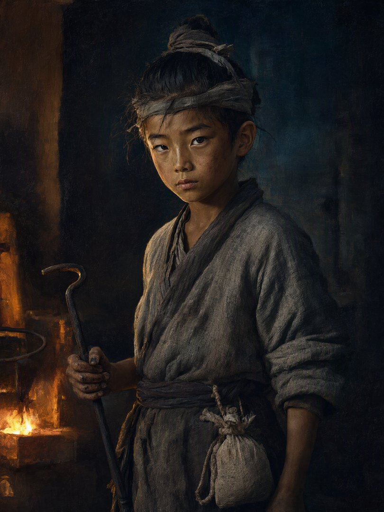
首次出场：第 1 章《灶膛里的火》
外貌：第一卷九岁孩童身量，瘦、黄，指甲缝里嵌着灶灰；扛灶一年后已是半大当家人模样，一双眼睛沉得不像孩子。
性格：九岁起家、十岁立业的穿越灵魂。表面机灵嘴甜，实则冷静到可怕——生死关头能压住抖，指着灶膛喊出"姓火"。
能力：赤火传承系统宿主；赤火九转·一转灶火（圆满）·二转燎原（圆满）·三转熔金（小成）·四转赤阳（初成）；御灶诀圆满，观火知候、心到火到；火烧盐场立"灶火号"，下扬州取弓，铁水熔金，盐引/棉布/海运三线并起。
标志：看火。他烧火，火像是活的。
🎯 隐藏底牌：他"知道"张士诚、朱元璋各自的结局——比这个时代的所有人，多看了十二年。传承碎片已得 3/7：博尔赤篇、扬州军饷篇、蒲氏商契篇（熔金诀）。（预告：卷三直脱儿之死"另有隐情"——有人要灭口）
02火氏一家
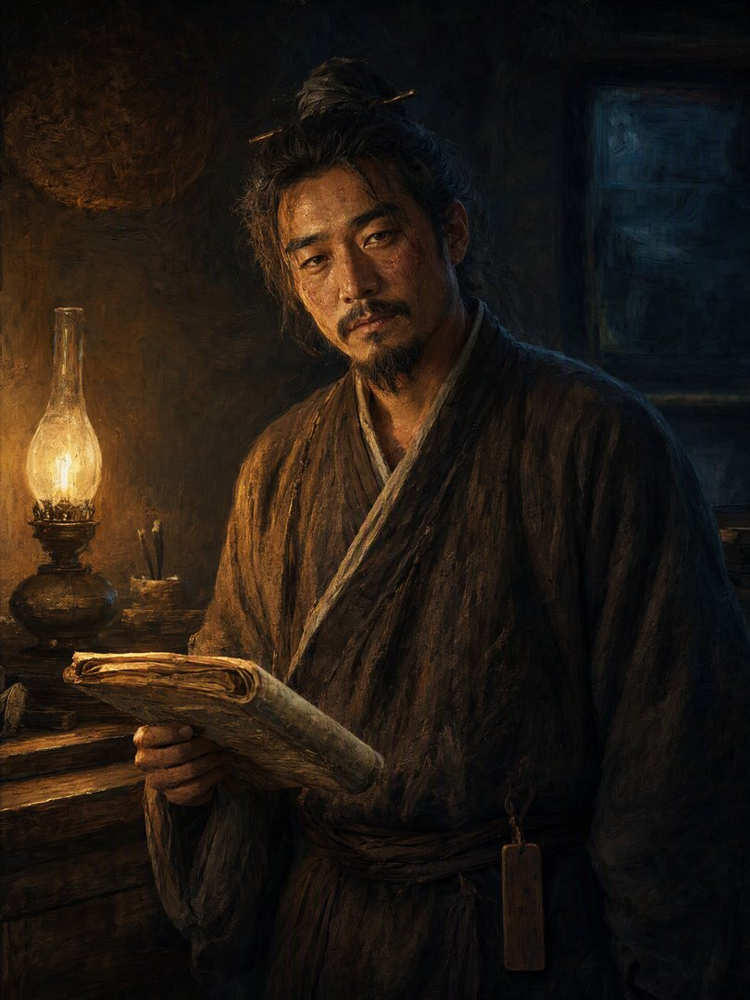
首次出场：第 1 章
性格：忠厚本分，武艺粗通；关键时候敢挡刀、敢断后。
特征：怀里永远揣着两样东西——半本盐账，一块刻着"直脱儿"三字的铜腰牌。
当前状态：第 2 章为护全家被脱里不花砍伤，第 3 章在百曲养伤，见证儿子与保长讨价还价。
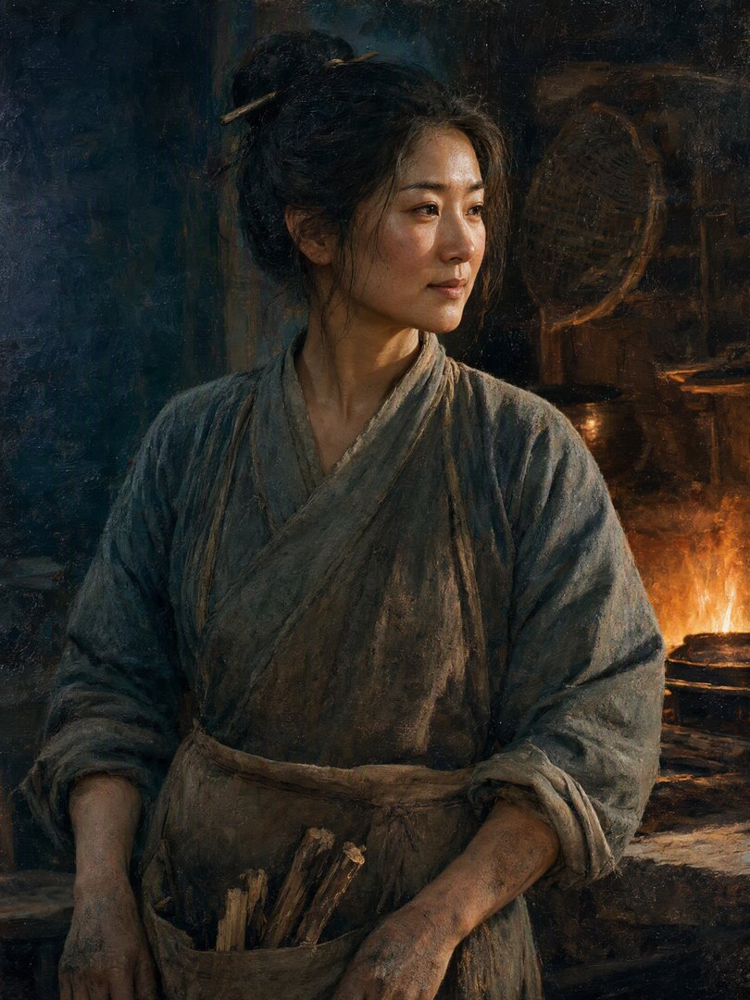
首次出场：第 1 章
性格：灶下妇人，遇事先哭，可哭完敢往兵头子身上扑。
关键：她是"蒙汉交融"的第一代——赤家汉化的钥匙，也是全家逃亡路上最稳的灶火。
名场面：指火改姓那夜，她死死把儿子按在怀里，又哭又笑。
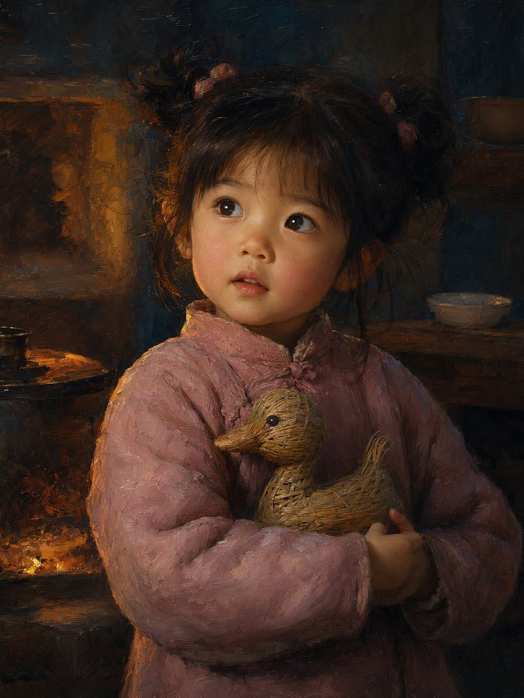
首次出场：第 1 章
当前状态：随家流亡，第 3 章起跟着海妹去芦苇荡捡柴；第 6 章冒雨给火家报信"水上有船！七八条！带着刀！"——救了百曲一命。
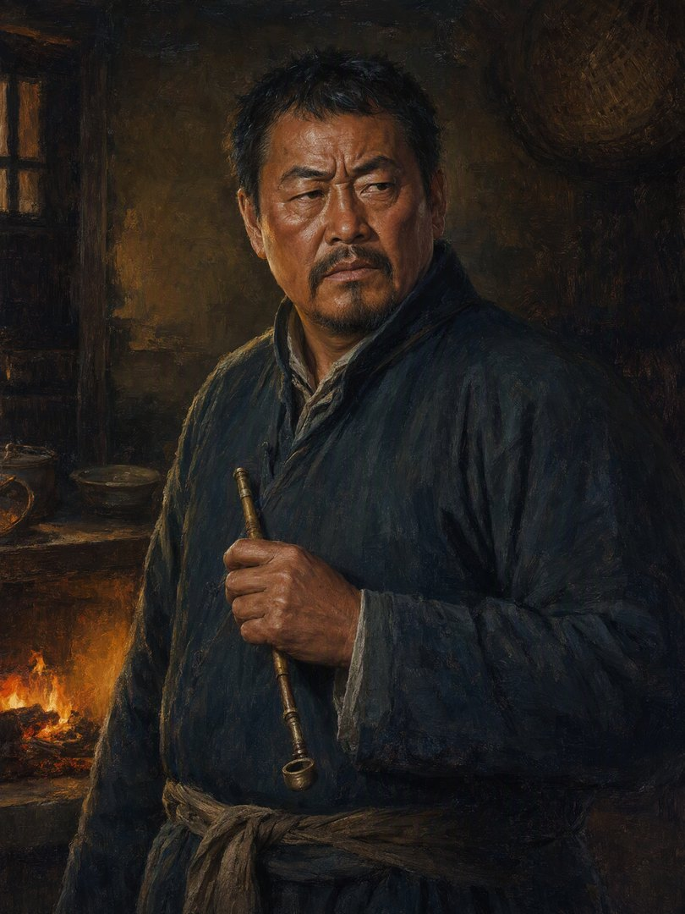
首次出场：第 2 章
性格：主张彻底隐姓埋名、藏锋过日，与火焱"以灶立户、以火谋生"的路线之争，是卷一暗线。
当前状态：随家抵达百曲。
03百曲乡邻
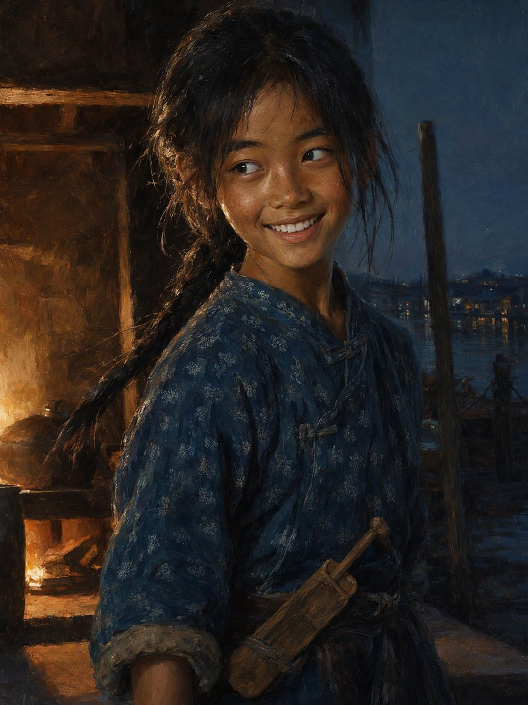
首次出场：第 3 章
外貌：黑黑瘦瘦，一笑露出一口白牙。
特长：认潮汐、识海路、懂风向——比村里男人还精；一眼看出火焱"烧火，火像是活的"。
📌 伏笔：她爹想跑海。海那边有船队收海盐，价钱比官引高一倍。（预告：卷二海商线关键角色）
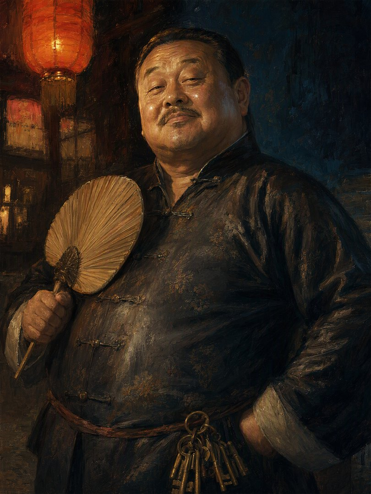
首次出场：第 3 章
性格：笑面虎。入籍要五贯钱，盐课新旧引差价盘剥三成——直到被一个九岁孩子一句话点破钱袋子。
当前状态：被火焱"二成半"谈成，已成火氏立户的见证人；第 5 章隆平府盐官到，他在码头替官府张罗灶户，两头周旋。
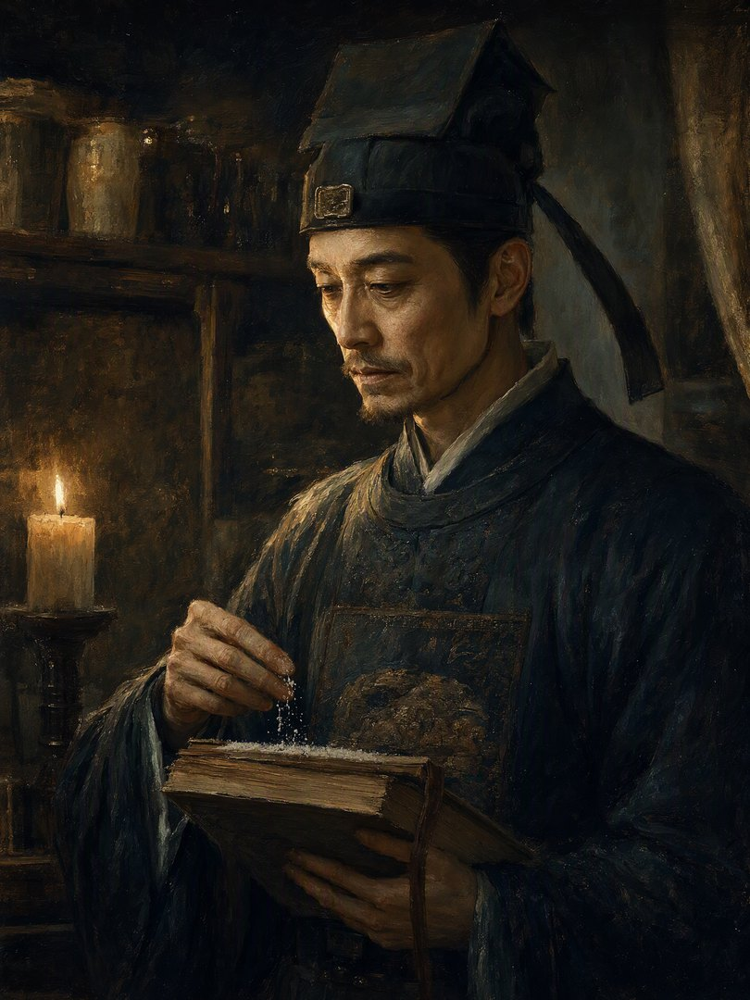
首次出场：第 5 章
性格：不咸不淡，眼里只有灶和盐。查私盐不靠喊打喊杀，挨家验灶——摸锅底、看余烬，一句"火候不错，这灶砌得好"便知真章。
关键：盐课刀口上的"秤"。火焱在他面前坦荡应对"灶潮烘干"，又拿"废团那垛盐是官盐"堵回脱里不花的刀。
当前状态：第 5 章随三艘盐旗船离开。（预告：卷三或再登场）
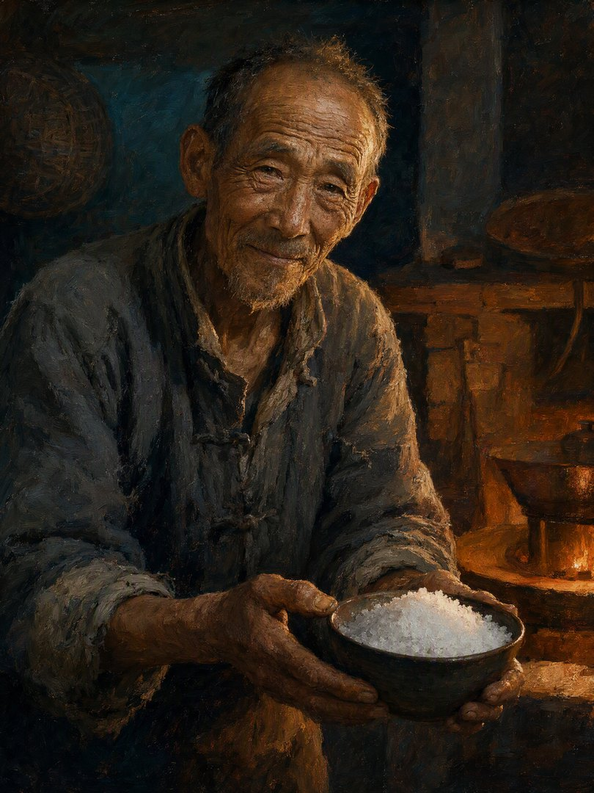
首次出场：第 3 章
特征：抓着火焱胳膊手都在抖的小老头——"小囡……不，火家哥儿……"。
关键：火焱在码头上第一次露脸谈判时，他站在灶户堆里替火家捏一把汗；后来成了灶火号最忠实的"老把式"。
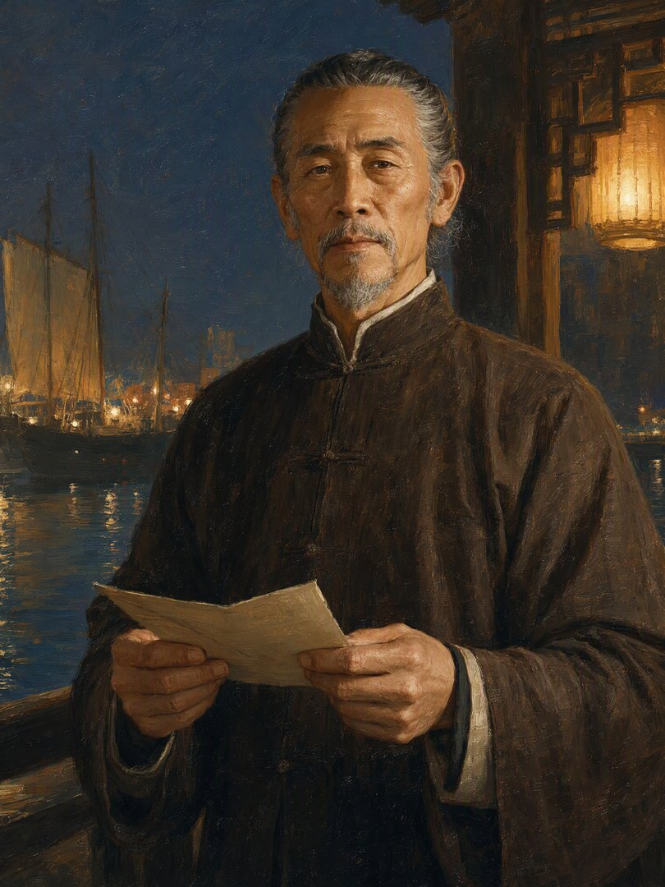
首次出场：第 12 章（携蒲家信札至百曲）
身份：泉州蒲氏——蒲寿庚后人的家仆。蒲家是宋元闽海巨商，直脱儿任福建行省左丞时与蒲家立商契，共掌闽海商路（传承碎片三·线索）。
关键：蒲家船队到百曲收盐收布，为灶火号打通海路。（预告：卷三蒲家是海运线的核心盟友）
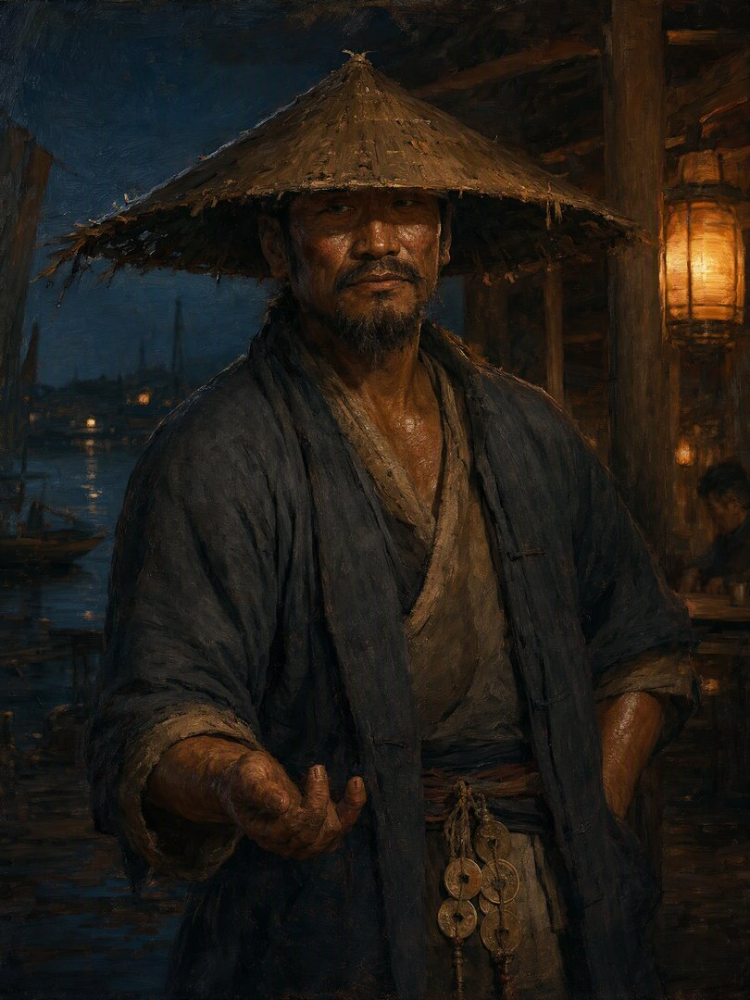
首次出场：第 14 章
特征：五十来岁，黑脸，左手缺两根手指，腰间挂一串铜钱；码头东头第三间茶馆好认。
关键：完者爷爷书信引荐的漕河地头蛇，帮火焱摸清扬州漕河故道，寻直脱儿藏弓之处。
04对手与强敌
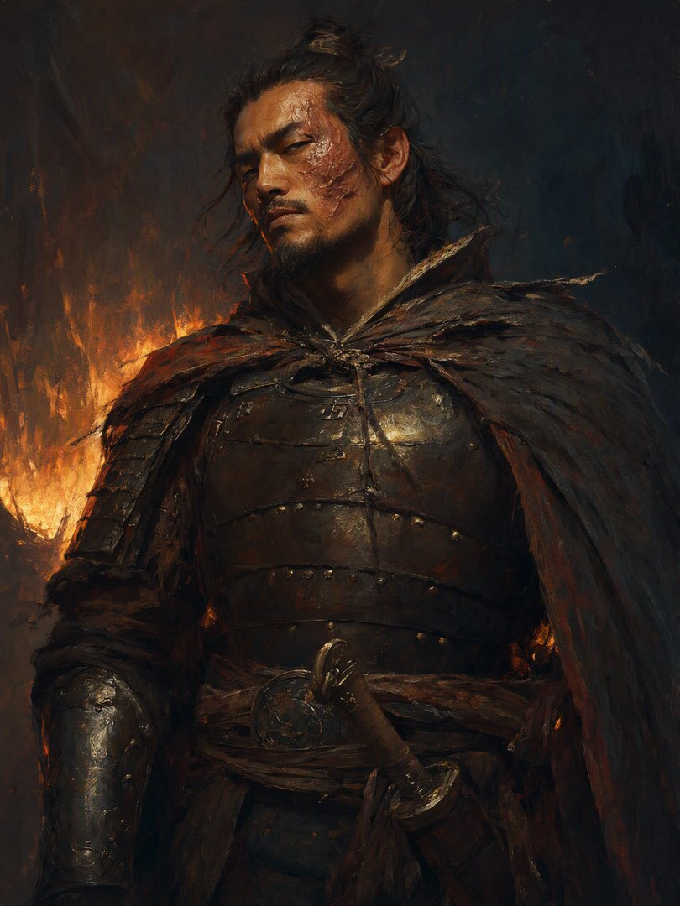
首次出场：第 2 章
目的：义军要赤家的命，他只要赤伯升怀里那半本盐账——杀人灭口，顺手牵羊。
名场面：芦苇荡拦截，被九岁孩子一锅沸水 + 满船大火逼退，丢下一句"火家！本千户记住你了！"；第 5 章再入百曲查私盐，被火焱"灶潮烘干"圆场；第 10 章在废团盐场，被火焱一把火烧了个干净。
当前状态：死于废团大火。（预告：卷四北元线另起炉灶，牵出新的元廷追查者）
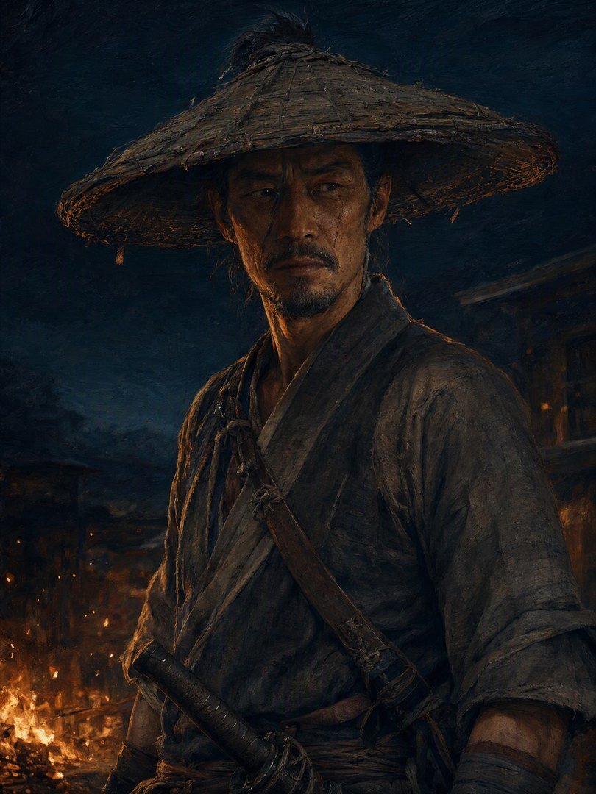
首次出场：第 7 章（以行脚商客身份入百曲）
身份：赤伯升在松江城的故人，刀刻一样的脸，右眼下一道旧疤。松江城破后没有北撤，领着一帮老兄弟在浙西山中藏了三年。
目的：受托带一句话给赤家，递上"有人在杭州寻元廷旧物"的情报——直指灶王庙与赤家腰牌。
当前状态：第 7 章入村后成为火家与外界之间的一条暗线——第 14 章书信引荐曹把总助火焱寻漕河藏弓；第 19 章引漠北阿鲁台入百曲，蒙元与火家的线搭上。（预告：卷三正式浮出水面）
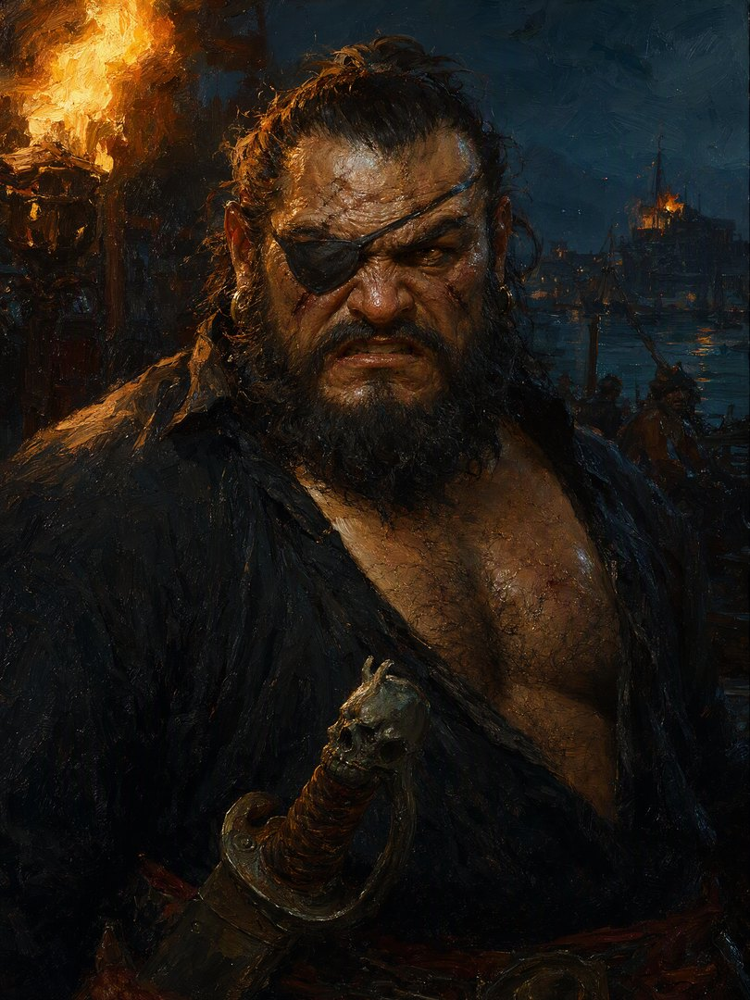
首次出场：第 6 章
目的：收了银子，只为买一个九岁孩子的命——"银子到手，就是阎王也杀"。
名场面：夜袭百曲九十九道弯，被火焱引进芦苇荡，一把火点了八条船，三十几号人葬身火海。
当前状态：死于第 6 章夜袭。（预告：买凶之人是谁，是卷二一大悬念）
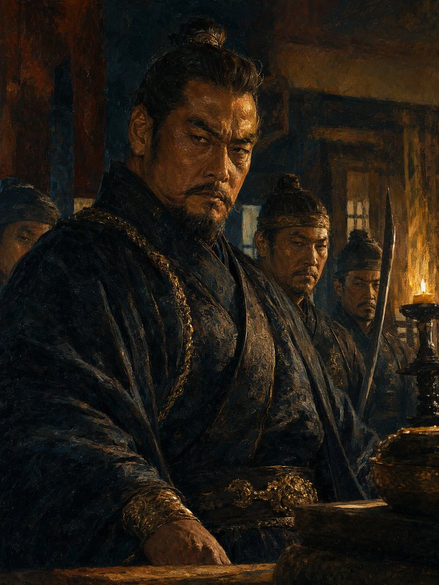
首次出场：第 15 章
特征：带五十个人、十条船、一船的刀来百曲，吓得周保长腿软。
关键：张士诚体系的盐政人，与火家签分账协议，后替火焱压下"私盐"折子。（预告：卷三张士诚盐政风暴中的两面人）
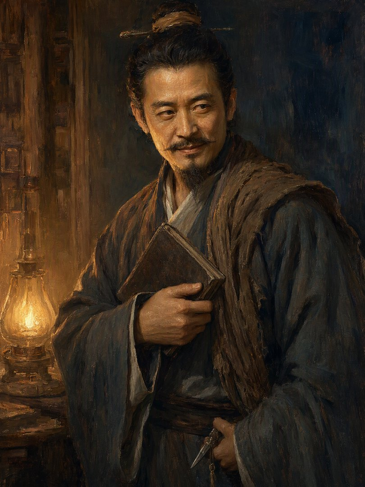
首次出场：第 18 章
特征：穿长衫、带账本、脸上挂着买卖人的笑——实为张士诚派来的探子。
关键：借"替张大帅借船"试探火家，被火焱一句"张同知道吗"点破。（预告：卷三隆平府内部倾轧的线头）
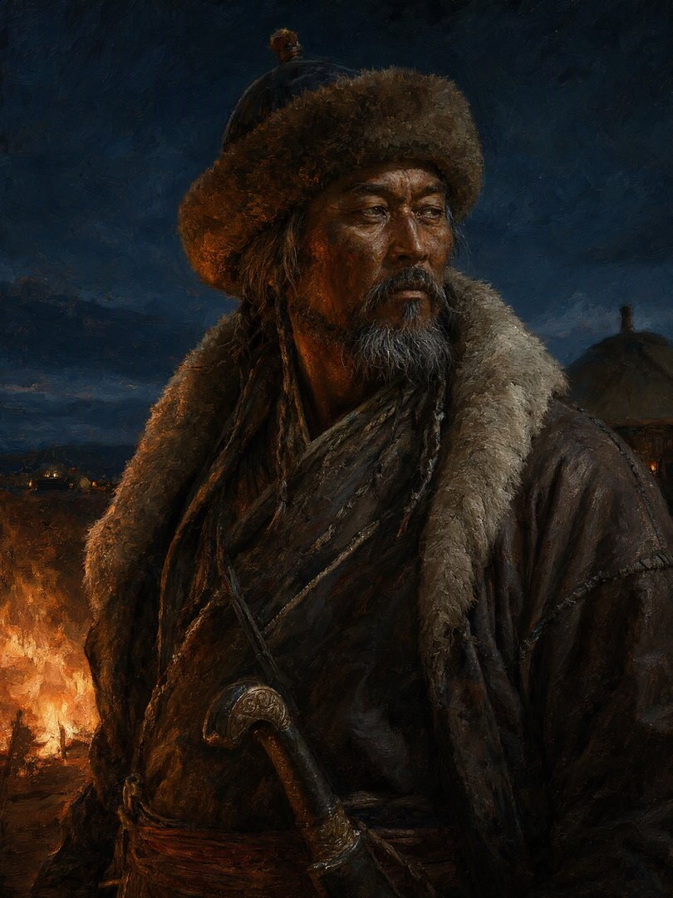
首次出场：第 19 章（经完者引荐至火家）
特征：五十来岁，饱经风沙的脸，北元旧臣。
关键：代表北元与火家搭线——蒙汉双通的棋局，火焱成了两边都想拉的子。（预告：卷四北元拉拢线正式登场）
05先祖与传承
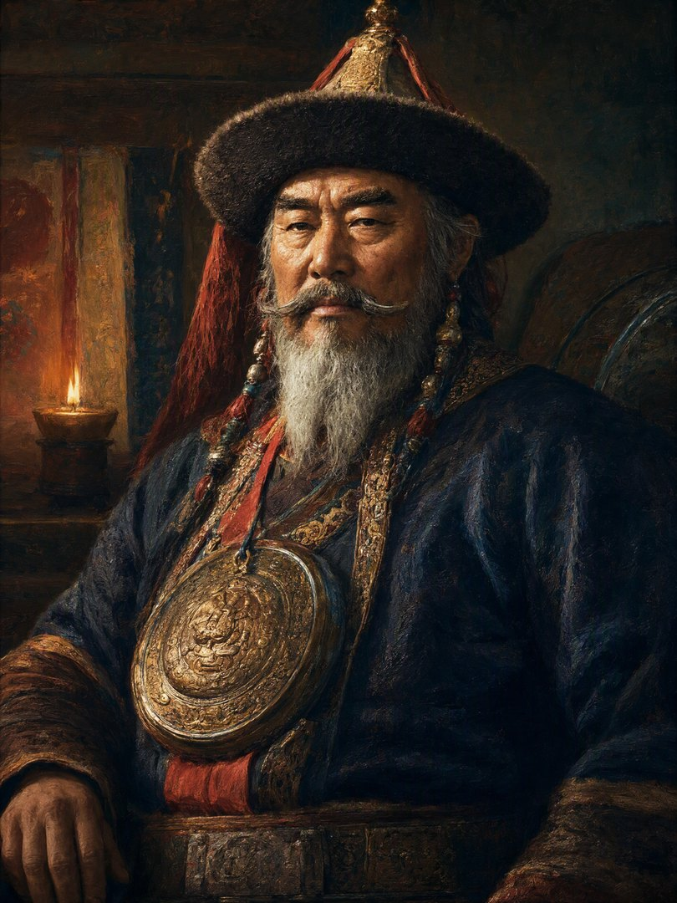
出身：父阿察儿事元太祖铁木真；本人历太宗窝阔台、定宗贵由、宪宗蒙哥、世祖忽必烈四朝。
官爵：博尔赤（掌御膳之官，以职赐姓"赤"）→ 至元十三年封昭毅大将军 → 至元十四年进封镇国上将军淮东宣慰使 → 历嘉议大夫行御史台中丞、资善大夫福建行省左丞、江淮行省左丞 → 至元二十三年六月，卒于江浙行省平章政事任上。
遗泽：临终以秘法"赤火封脉"，将毕生修为与记忆封入血脉——等一个"灶火为证、弃赤归火"的子孙。
出场形式：传承记忆碎片（每块 = 功法 + 秘闻 + 宝藏）。（预告：碎片共 7 块，藏着他之死"另有隐情"的真相）
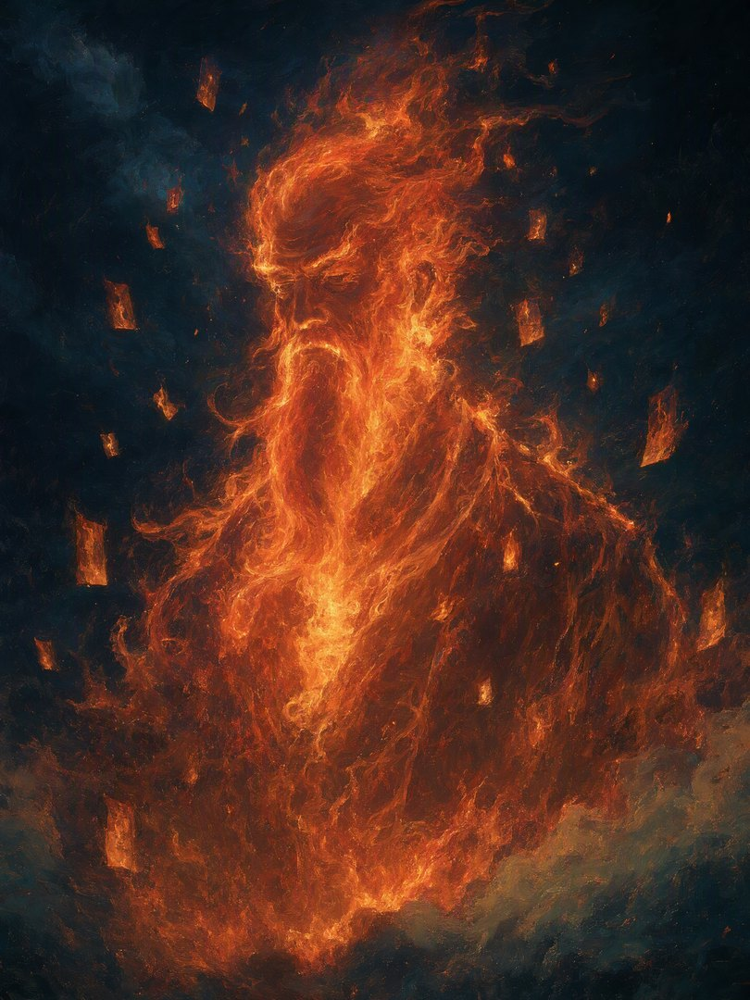
首次出场：第 1 章
声纹：苍老、粗豪，带着草原的风沙与炭火气；时而絮叨，时而毒舌，偶尔还夸人。
名言："火分五候：文火、武火、旺火、余火、烬火。烬火不烧柴——烬火，烧的是命。"
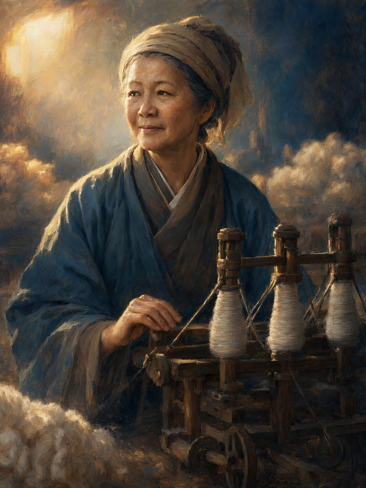
史实：元贞年间自海南崖州归，革新搅车轧棉、三锭纺车、绳弦大弓，"松郡棉布衣被天下"。
小说中的作用：已故先人，其遗技是卷二"灶火商号"棉布线的技术源头。第 5 章火焱教海妹她娘认搅车轴，乌泥泾纺技已在百曲落地；第 13 章灶火号收布一千二百匹，棉布线成形。（预告：卷三火氏织坊全面引乌泥泾纺技）
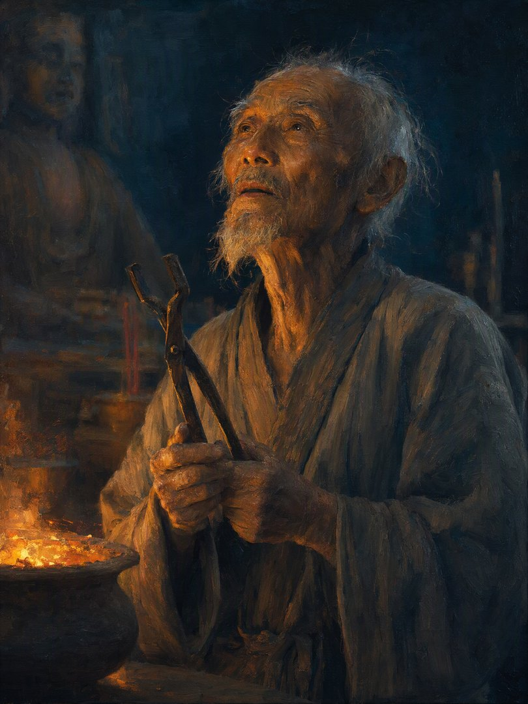
首次出场：第 8 章
特征：香火冷清的灶王庙里，蹲在灶台边烧水的老者。见火焱进庙，先问"先迈的哪只脚"（左脚），又问"你姓啥"——等了一辈子，等的就是这个答案。
关键：闻"姓火"即跪，"老祖宗说的火家人，终于来了"。灶王庙后老槐三围处，正是直脱儿埋金之处。
当前状态：第 8 章指引火焱掘金。（预告：第 17 章西湖另有一座灶王庙，佟老庙祝掌"家事"一脉——庙祝之影，卷三揭晓）
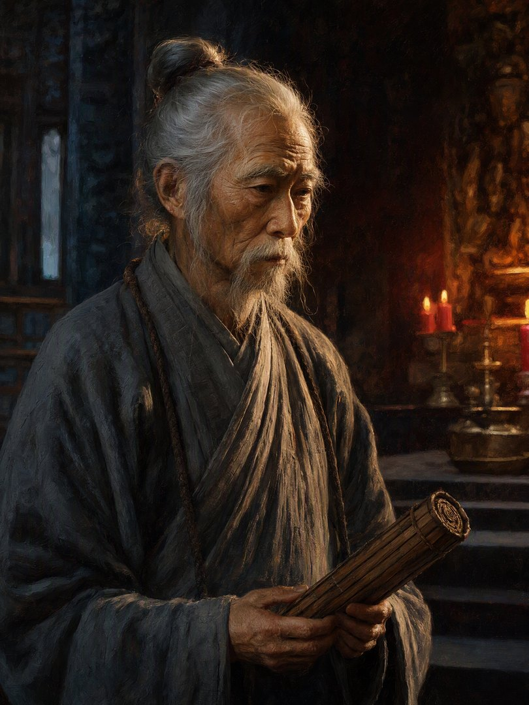
首次出场：第 17 章
特征：钱塘门灶王庙之外的另一座庙——西湖灶王庙的庙祝，世代佟氏。
关键：他爷爷的爷爷传下的半句话点破"钱塘门外者家资也，西子湖畔者家事也"——直脱儿藏弓之秘与"家事"有关。（预告：佟氏一脉是"赤火封脉"的守墓人分支，卷三揭开）
06历史风云人物预告 · 点击展开
以下人物均为真实历史人物，按史实年代与结局处理，仅虚构"火家与他们的交集"。
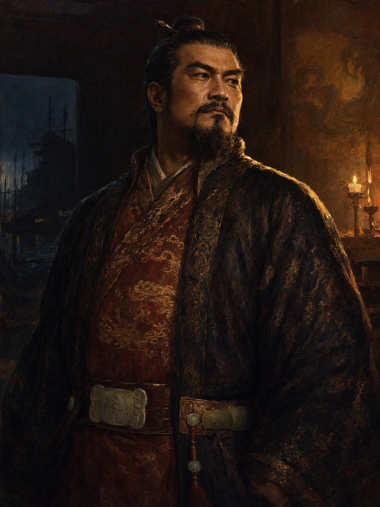
至正十三年高邮称诚王，国号大周；至正十六年取平江定都；至正二十三年称吴王。
登场预告：卷二隆平府征召帖至（第 23 章），卷三江南棋局主对手之一——主角知道他的结局：至正二十七年，兵败自缢。
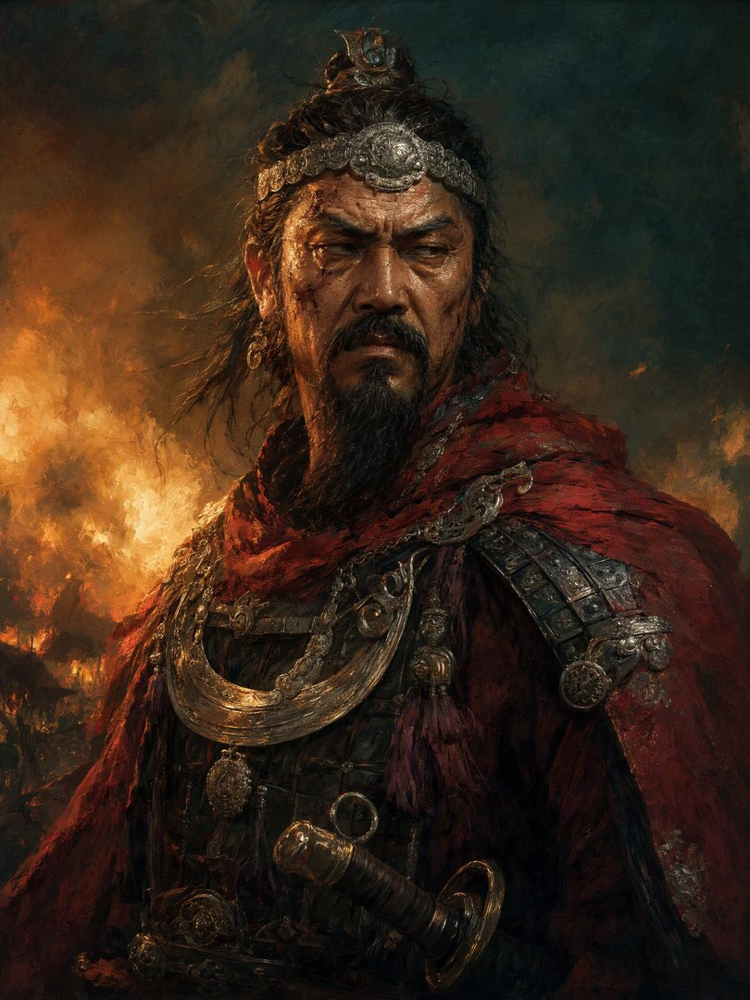
至正年间率苗军守杭州，为元廷在江南的最后一支劲旅。
登场预告：卷二正文（第 15/17 章）提及其苗军守杭州——至正十七年张士诚攻嘉兴、取杭州，杨完者败走。（预告：卷三杭州易主，火家趁乱局取"家事"之秘）
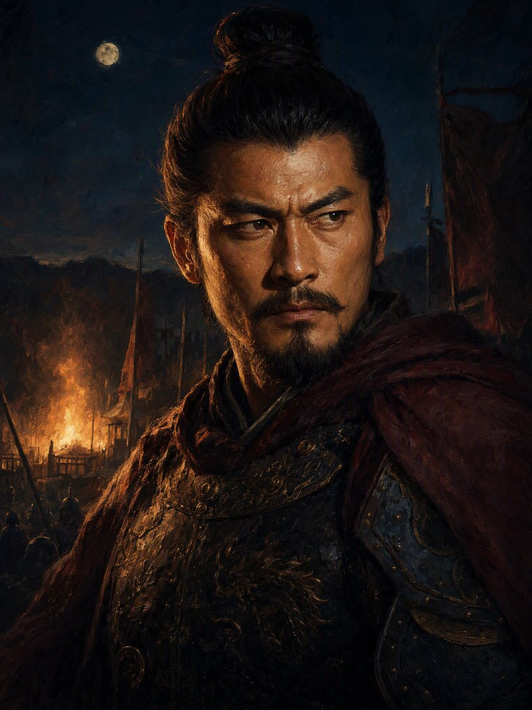
登场预告：卷三应天府来客，卷四登基前夜——主角十一年前就知道他会赢。
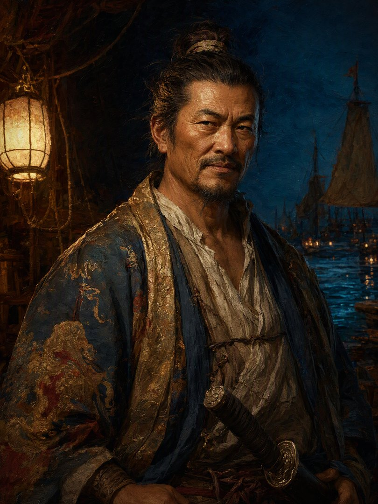
登场预告：卷三海商线的真实博弈对象——海妹口中"海那边收海盐的船队"指向他。
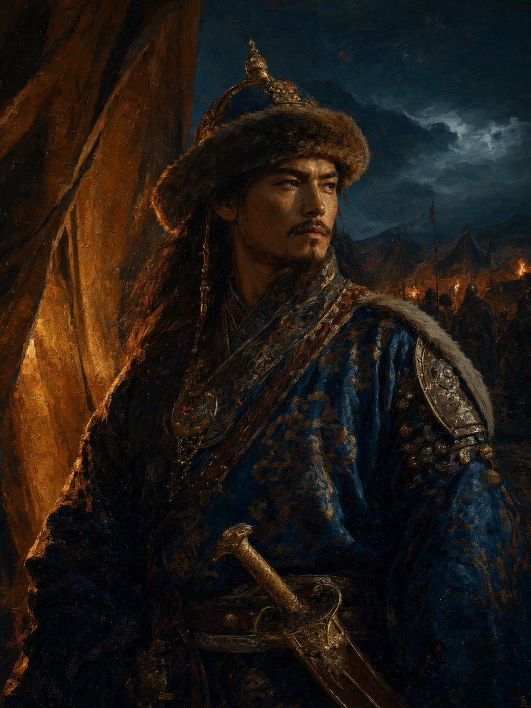
登场预告：卷四卷五，蒙汉双通的最高潮——两朝皆欲得火氏。
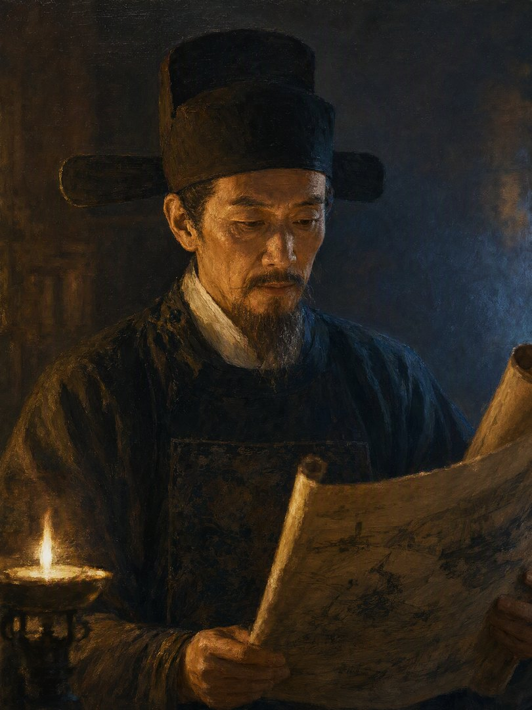
《熬波图》为中国第一部海盐专著，存图 47 幅。
登场预告：卷二高光——主角引《熬波图》煮盐火候论破局，"火候即功法"。
07后世火氏彩蛋 · 点击展开
这些是史书上真实存在的百曲火氏后人，作为"活成史书样子"的终局呼应。
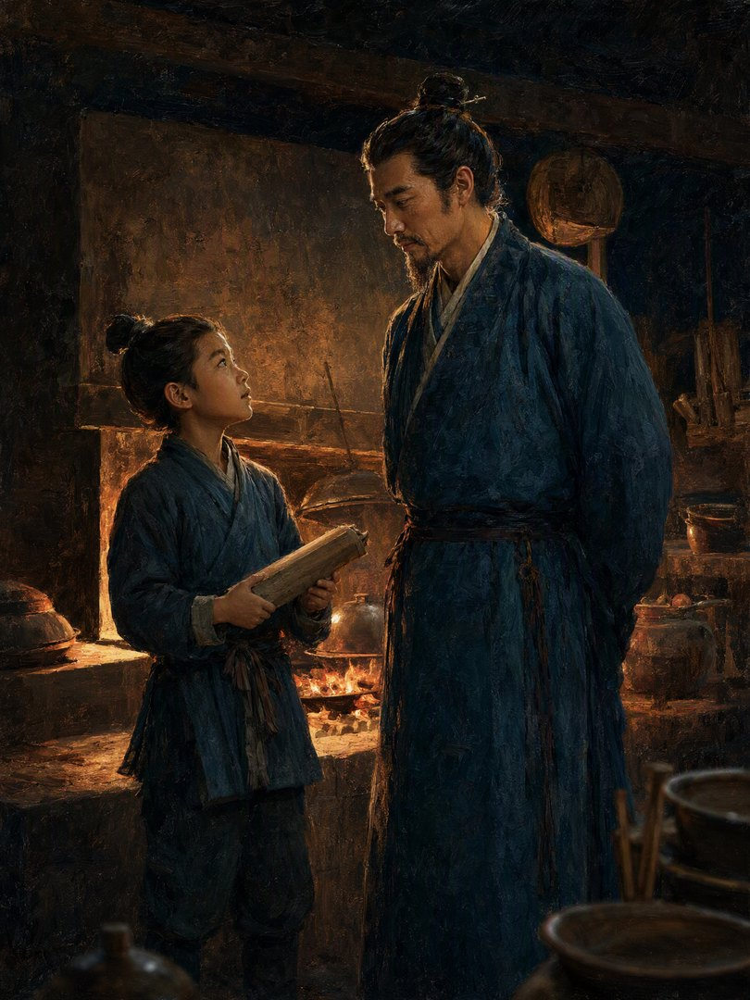
善诗赋，助本乡人冯金伯辑成《海曲诗抄》。
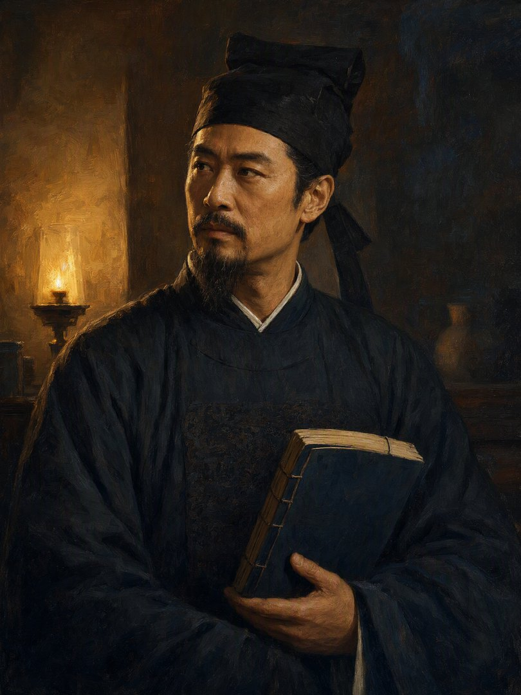
贡生，官句容县学训导；辑《海曲诗抄》。
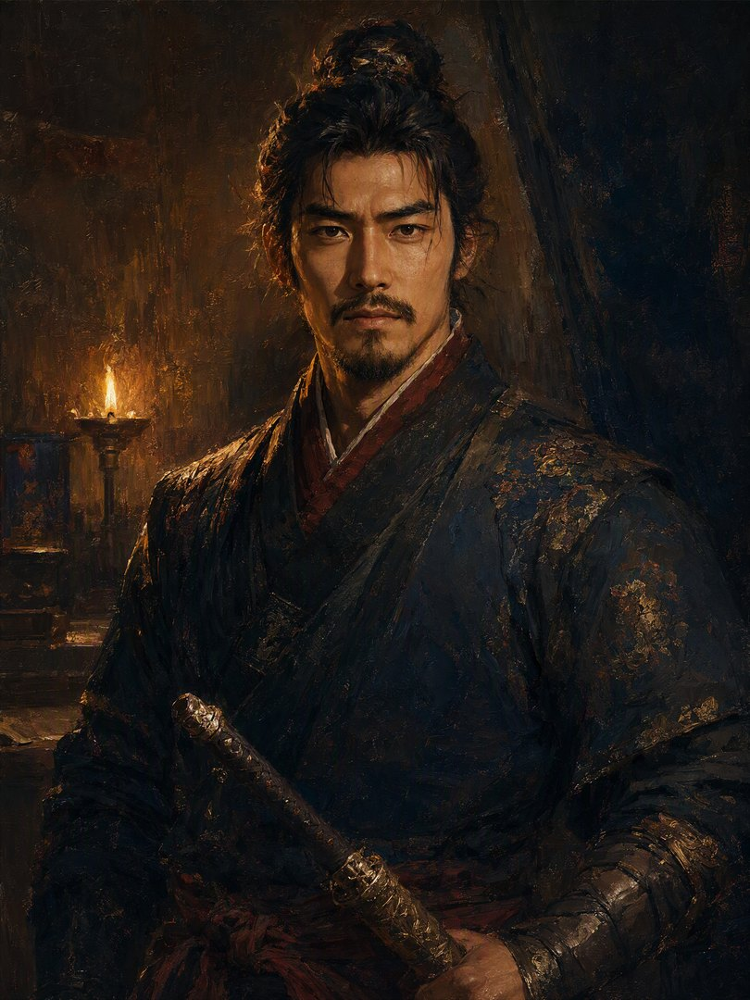
欲继冯金伯编《海曲诗抄续集》。
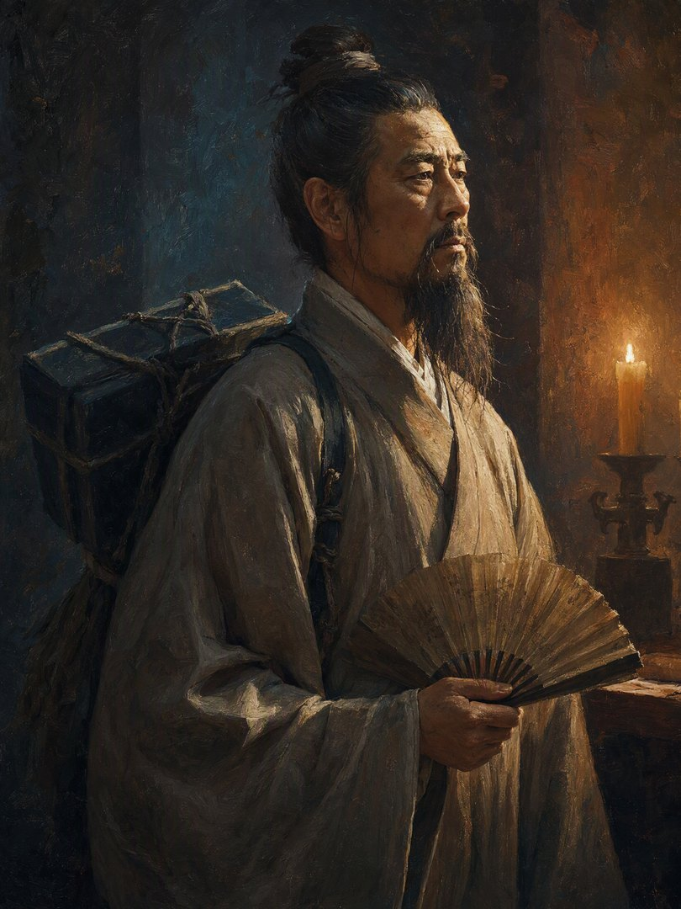
明代科学家徐光启外甥，明末抗清殉国——百曲忠义传统的一笔。
08人物关系速览
· 图鉴随连载更新 · 预告条目随章节发布逐步放出 ·